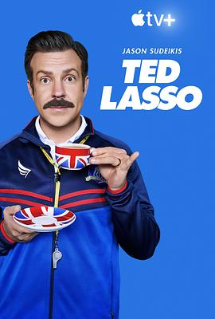

足球教练 第二季 / Ted Lasso Season 2
又名：乜都得教练 / 泰德拉索：错棚教练趣事多
完满得虚假，但是每个角色都有做铺垫和回应
作品信息
| 导演 | 德克兰·罗内 / 伊斯拉·埃德尔曼 / 埃丽卡·丹顿 / 马特·利普西 / 萨姆·琼斯 / M·J·德莱尼 |
| 编剧 | 杰森·苏戴奇斯 / 比尔·劳伦斯 / 布兰登·亨特 / 乔·凯利 / 菲比·沃什 / 黎安·鲍恩 / 阿什利·妮可·布莱克 / 比尔·鲁贝尔 / 布雷特·戈德斯坦 / 杰米·李 / 简·贝克尔 / 萨沙·加伦 |
| 主演 | 杰森·苏戴奇斯 / 汉娜·沃丁厄姆 / 布雷特·戈德斯坦 / 朱诺·坦普尔 / 杰里米·斯威夫特 / 菲尔·邓斯特 / 布兰登·亨特 / 尼克·穆罕默德 / 哈丽特·瓦尔特 / 萨拉·奈尔斯 / 托希布·吉莫 / 克里斯托·费尔南德斯 / 基兰·奥布莱恩 / 科拉·波金尼 / 比利·哈里斯 / 安妮特·白兰特 / 斯蒂芬·马纳斯 / 西瑟·巴比特·科努德森 / 安德利娅·安德斯 / 露丝·布莱德利 / 克莱尔·斯金纳 / 詹姆斯·兰斯 / 帕特里克·巴拉迪 / 莫·尤迪-拉穆尔 / 查理·希斯科克 / 亚当·肖 / 布隆森·韦伯 / 侬索·阿诺斯 / 亚当·科伯恩 / 索菲娅·巴克莱 / 夏洛特·斯宾塞 / 查理·罗尔斯 / 安东尼·海德 / 艾莉·泰勒 / 琪琪·梅 |
| 类型 | 剧情 / 喜剧 / 运动 |
| 制片国家/地区 | 美国 |
| 语言 | 英语 |
| 首播 | 2021-07-23(美国) |
| 季数 | 2 |
| 集数 | 12 |
| 单集片长 | 40分钟 |
| IMDb | tt12926006 |
最后一次看到是 2026-08-12T21:11:23+08:00 · 豆瓣原页